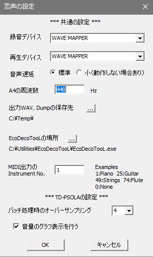

概要 TD-PSOLA画面 Phase Vocoder画面 Sound Effect画面 設定画面 問題と対策

【録音デバイス】
マイク入力時に恋声に入力する音声の録音デバイスを選択します。
WAVE MAPPERを選択すると、Windowsの録音デバイスの設定に従います。
（注意）恋声の起動後にマイク等のケーブルをPCに接続/着脱しないで下さい。また、接続/着脱してもすぐには認識されないので、Windowsの録音デバイスのプロパティで接続/着脱を確認してから、恋声を起動して下さい。
【再生デバイス】
恋声に出力する音声の再生デバイスを選択します。
WAVE MAPPERを選択すると、Windowsの再生デバイスの設定に従います。
（注意）恋声の起動後にライン出力等のケーブルをPCに接続/着脱しないで下さい。また、接続/着脱してもすぐには認識されないので、Windowsの再生デバイスのプロパティで接続/着脱を確認してから、恋声を起動して下さい。
【音声遅延】
通常は「標準」にして下さい。出力音声遅延が気になる場合に「小」にして下さい。この変更を行ったらすぐに恋声を終了して下さい。この変更は次回から有効になります。
（注意）「小」にすると音声が正しく出力されない場合があります。その場合は「標準」に戻して下さい。
【A4の周波数】
A4の周波数を設定して下さい。標準では440Hzです。
【出力WAV、Dumpの保存先】
WAVファイル(save_xxxx.wav)とDumpファイル(dump_xxxx.txt)の保存先のフォルダです。デフォルトではkoigoe.exeのあるフォルダになっていますが、任意のフォルダに変更できます。
【EcoDecoTooLの場所】
EcoDecoTooLを使用すると44.1kHz以外のWAVファイルやMP3/MP4/AAC/FLVといったファイルを恋声で使用できるようになります。EcoDecoTooL.exeのある場所を指定して下さい。EcoDecoTooLを利用する方法は下記補足参照。
【MIDI出力のInstrument No.】
鍵盤を左クリックするとMIDI音源から押した音を出力します。この時のMIDI音源のInstrument
No.を入力します。参考にいくつかの楽器の例を示します。
1: piano
7: harpsichord
17: organ
25: nylon-str.Gt.
33: acoustic Bs.
41: violin
49: strings
57: trumpet
74: flute
0: none MIDI音源がない場合には0を設定して下さい。（Windowsには標準でMIDIのソフト音源が入っています）
【バッチ処理時のオーバーサンプリング】
TD-PSOLAのバッチ処理を行う際のオーバーサンプリング数を指定します。値を大きくするとピッチ検出の精度が向上しますが、処理に時間がかかるようになり、時にはメモリ不足で動作しない場合もあるので注意して下さい。
【音量のグラフ表示を行う】
ここにチェックを入れると、TD-PSOLAの画面でピッチ表示と同時に音量を青色で表示します。単位は右側のラベルのdB値です。
補足 「EcoDecoTooL」を使う方法
１． 「EcoDecoTooL」を使用するためには、「恋声の設定」の画面の「EcoDecoTooL.exeの場所」の右側のボタンを押して、EchoDecoTooL.exeのある場所からEchoDecoTooL.exeを選択して下さい。選択すると、『EcoDecoTooL.iniを「恋声」用に変換します。よろしいですか？』というメッセージが表示されるので、「はい」を選んで下さい。最後に、設定メニュー画面の「OK」を押して設定を終了して下さい。
２． 上記の設定を行うことで、ファイルの選択画面からは、wav/mp3/mp4/aac/flvの拡張子のファイルを選択できるようになります。それ以外にも「EcoDecoTooL」が読み込み可能なファイルはすべて読み込むことができますので、それ以外の拡張子の場合はファイル入力ダイアログの「ファイルの種類」を「すべてのファイル(*.*)」にして下さい。ドラッグ＆ドロップでファイルを選択する場合には常にすべてのファイルを読み込めます。
３． ファイルを指定すると、EcoDecoTooL.iniの変更が必要な場合にはメッセージが出ますので、「OK」を押して下さい。
（補足） EcoDecoTooL.iniは「EcoDecoTooL」を使用するたびにチェックしますので、「EcoDecoTooL」側から自由に設定を変更しても差し支えありません。尚、現在動作を確認している「EcoDecoTooL」はVer1.14のものです。
４． 「EcoDecoTooL」が正常に処理を完了すると、「EcoDecoTooL」の画面は消えて「恋声」の処理が開始します。「EcoDecoTooL」が変換に失敗すると、「EcoDecoTooL」が『変換できませんでした』というメッセージを表示しますので、「OK」のボタンを押して下さい。